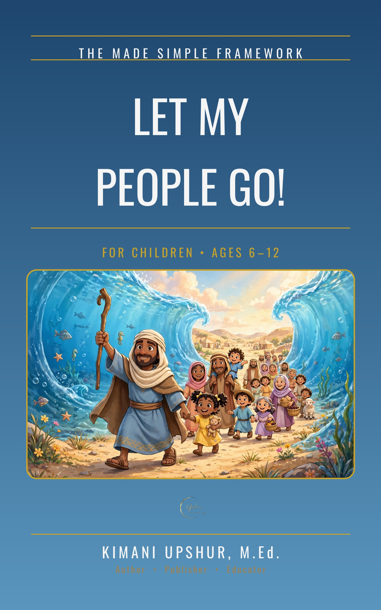

Home / Kids & Teens / Children
Let My People Go!

Moses, the plagues, and the great escape! A fully illustrated Bible storybook retelling the Exodus for children ages 6–12 — Moses before Pharaoh, the ten plagues, the Passover night, and the Red Sea crossing, as God leads His people out of Egypt (Exodus). Scripture-accurate, with the standard salvation invitation and back matter.
Get This Book
- Publisher
- Upshur Unlimited, LLC
- Author
- Kimani Upshur, M.Ed.
- Format
- Ebook + Audiobook
- Language
- English
- Audience
- For Children • Ages 6–12
More Children Books
Explore the full collection of books for children.